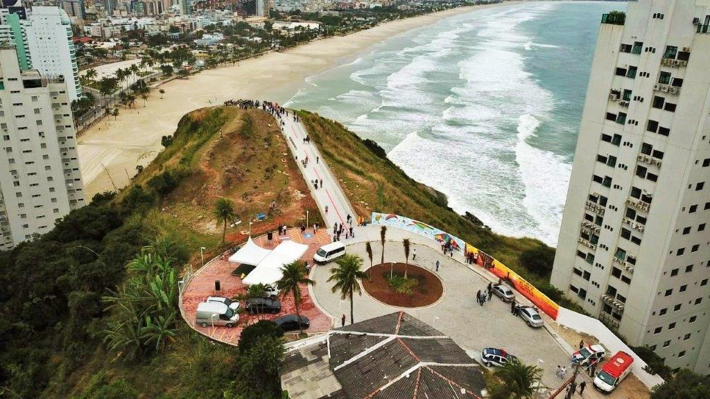
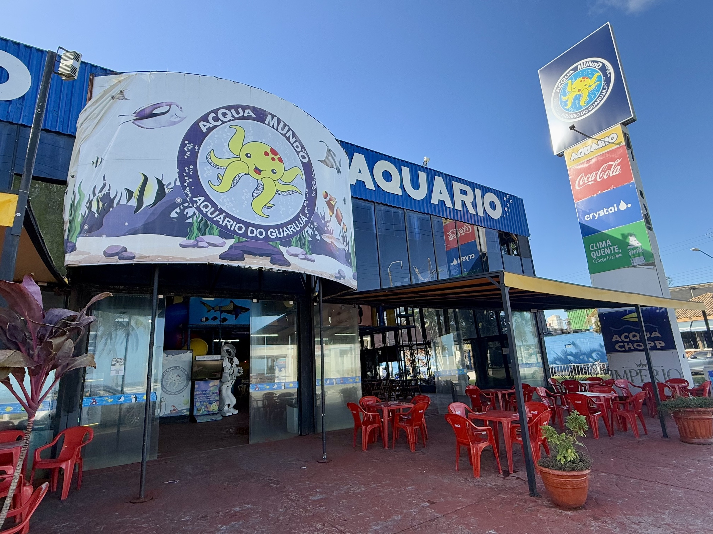
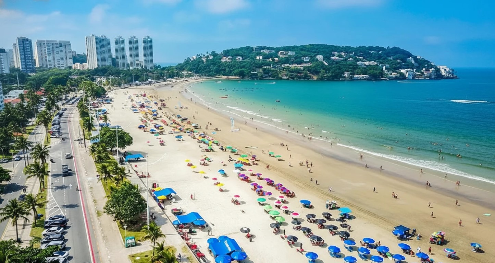
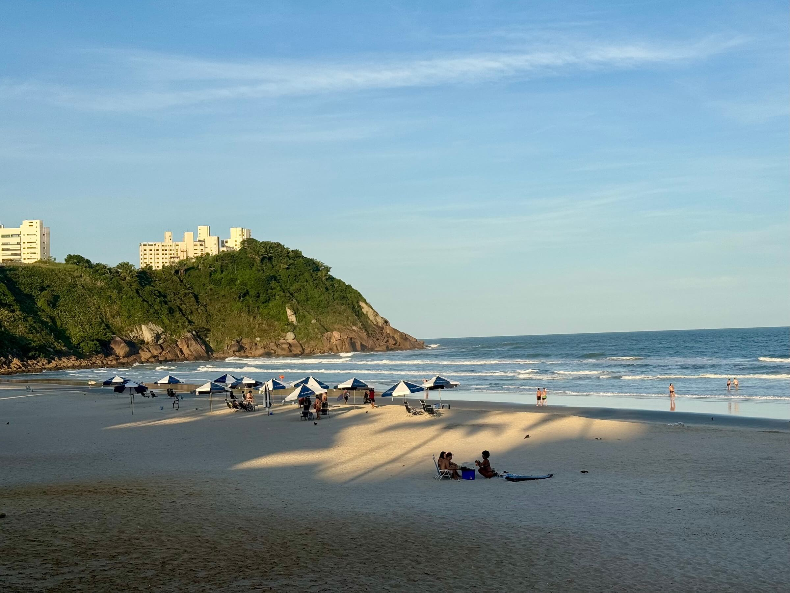
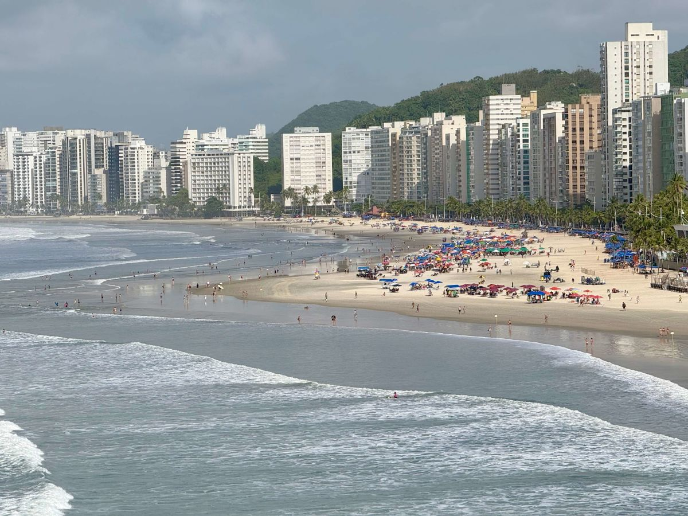
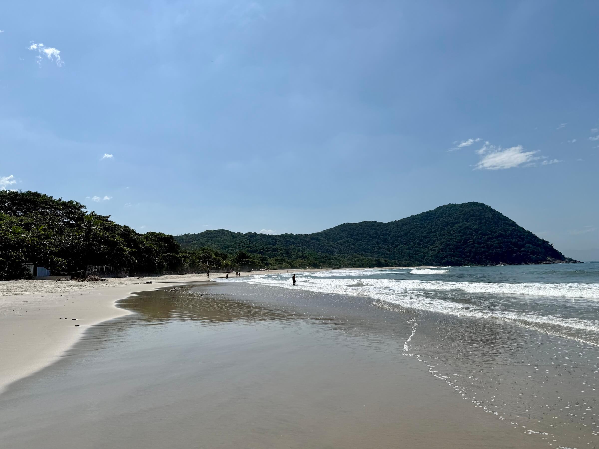
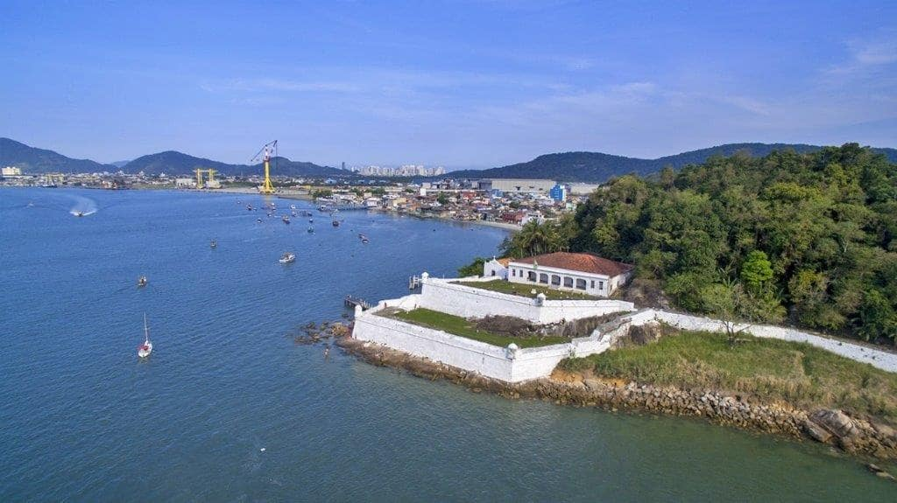
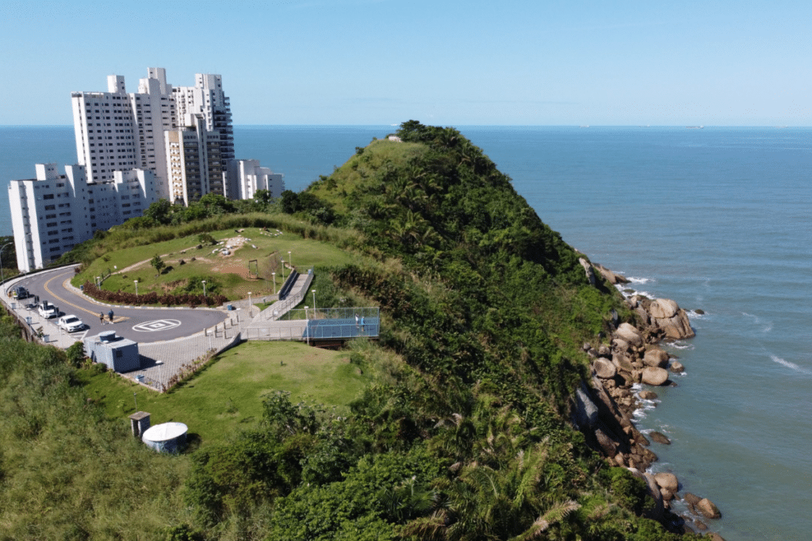
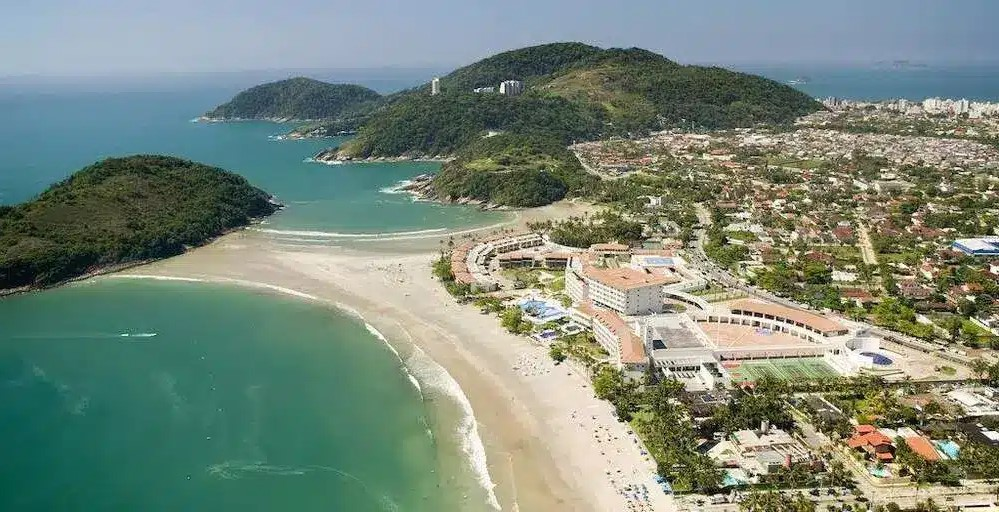

{kind=link}

Mirante do Morro da Campina
Local: Entre as praias Enseada e Pitangueiras
Descrição
Também chamado de Morro do Maluf, oferece uma das vistas panorâmicas mais bonitas da cidade, com vista para as Praias do Tombo, da Enseada, do Pernambuco e do Guaiúba, além de parte da cidade de Santos.
Ver mais
{kind=link}

Acqua Mundo
Local: Praia da Enseada
Descrição
Acqua Mundo é um parque aquático que oferece diversas atrações para todas as idades, incluindo toboáguas, piscinas de ondas, áreas de lazer e atividades para crianças.
Ver mais
{kind=link}

Praia da Enseada
Acesso: Av. Miguel Estefno
Descrição
Uma das praias mais famosas da cidade, conhecida pela longa faixa de areia, quiosques e esportes aquáticos. É um local popular para famílias e turistas que buscam diversão à beira-mar.
Ver mais
{kind=link}

Praia do Tombo
Acesso: Av. Prestes Maia
Descrição
Muito procurada por surfistas e reconhecida pela boa qualidade de suas águas, a Praia do Tombo é um local ideal para quem gosta de esportes aquáticos e busca um ambiente mais tranquilo para aproveitar o mar.
Ver mais
{kind=link}

Praia de Pitangueiras
Acesso: Via Centro / Av. Mal. Deodoro da Fonseca
Descrição
Praia central da cidade, conhecida por suas águas cristalinas e ambiente familiar, além de ser um ponto de encontro para moradores e turistas, cercada de comércios, restaurantes e prédios à beira-mar.
Ver mais
{kind=link}

Praia Branca
Acesso: Rod. Ariovaldo de Almeida de Viana
Descrição
Essa praia é conhecida por sua beleza natural, com águas claras e areia branca, além de ser um local mais tranquilo e menos movimentado, ideal para quem busca um ambiente mais sossegado para relaxar e aproveitar a natureza.
Ver mais
{kind=link}

Fortaleza de Santo Amaro da Barra Grande
Acesso: Estr. Santa Cruz dos Navegantes
Descrição
A Fortaleza de Santo Amaro é um importante monumento histórico que se tornou um ponto turístico popular, oferecendo aos visitantes a oportunidade de explorar sua arquitetura e aprender sobre a história militar da região, além de proporcionar vistas panomâmicas do mar e da cidade.
Ver mais
{kind=link}

Mirante das Galhetas
Local: Entre as praias Asturias e Tombo
Descrição
Mirante moderno com passarela de vidro e vista para as prais de Pitangueiras, Enseada e Tombo, além de ser um local popular para fotos e para apreciar o pôr do sol.
Ver mais
{kind=link}

Praia de Pernambuco
Acesso: Av. Marjory da Silva Prado
Descrição
Praia mais tranquila e sofisticada, famosa pelo encontro com a Ilha do Mar Casado.
Ver mais